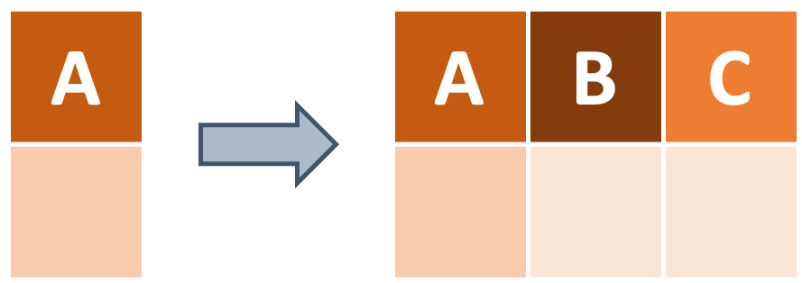

Manipulate rows and columns with dplyr’s select and filter functions
Create new columns with dplyr’s mutate function and fill them conditionally with case_when (also from dplyr)
Usetidyr’s separate_wider_delim function to split a column into two
What are Tidy Data?
What are some common things you like to do with your data? Maybe remove rows or columns, do calculations and add the results as new columns? These operations (and others) are called “data wrangling”. The data we get to work with are rarely, if ever, in the format we need to do our analyses and data wrangling can help bridge that gap. dplyr and tidyr are two R packages from the Tidyverse that provide a fairly complete and extremely powerful set of functions for us to do virtually all needed wrangling quickly. Here we introduce some commonly used functions from these two packages.
We can use glimpse from the dplyr package to look at part of the data while also getting some relevant structural information (i.e., what type of data are in each column, etc.).
To start off, how do we do a fundamental action like selecting the columns we want? dplyr’s select function provides us with a straightforward way to do just that. We only need to provide the column names!
Note that even if you select just one column, a dataframe will be returned. Whereas if you use the $ operator you get a vector (e.g., data$column returns a vector, not a dataframe).
select Example: Including & Excluding
Example
To select only the species, island, and body_mass_g columns, we can use the following code:
# Provide the name of the data and then the columns that you want!penguins_selected <- dplyr::select(.data = penguins, species, island, body_mass_g)# Look at the productdplyr::glimpse(penguins_selected)
If we want to remove specific columns, we can use the - operator.
# Put a "-" in front of each column you would like to remove from your dataframepenguins_selected <- dplyr::select(.data = penguins, -flipper_length_mm, -sex)# Look at the productdplyr::glimpse(penguins_selected)
If we want to select the columns that contain length measurements, we can manually type bill_length_mm and flipper_length_mm, but there’s actually an easier way using the contains function, also from the dplyr package. Enter a string that matches what you’re looking for among the column names.
# Enter a matching string inside of a `select` callpenguins_selected <- dplyr::select(.data = penguins, dplyr::contains("length"))# Look at the productdplyr::glimpse(penguins_selected)
Now what if we wanted all the columns from the first column species to the sixth column body_mass_g? We can use a colon, :, between the first (leftmost) and last (rightmost) columns in the range that we want to include.
# Use a colon to indicate a range of columns you want to selectpenguins_selected <- dplyr::select(.data = penguins, species:body_mass_g)# Look at the productdplyr::glimpse(penguins_selected)
Conveniently selecting a range of columns can be especially useful when you have a big dataframe and don’t want to exhaustively list every column by name.
Subsetting Rows
Instead of selecting certain columns, how can we get a subset of rows that meet certain conditions? For example, in the diagram below, how can we filter for rows that contain a diamond shape? We can use dplyr’s handy filter function along with logical and boolean operators!
For reference, here are the operators we can use to specify our conditions with filter.
== – two items are exactly equal to one another
!= – two items are not equal to one another
</> – one item is less/greater than the other
<=/>= – one item is less/greater than or equal to the other
| – one statement or another is TRUE
& – both statements are TRUE
%in% – a value is in a set of other values
You may have noticed that filter accepts the same operators that base R’s subset function does. This is no accident and filter is one of the more accessible Tidyverse functions because the syntax it shares with its base R equivalent.
To get familiar with these operators, let’s see some examples!
filter Example: Exactly Equal
Example
To make a subset of our data that only contains information on Chinstrap penguins, we would use the == operator for “exactly equal to”
# Get all the rows where the species is "Chinstrap" penguins_filtered <- dplyr::filter(.data = penguins, species =="Chinstrap")head(penguins_filtered)
Note that we need to write the value we’re looking for as a character string bookended by quotation marks.
filter Example: Either / Or
Example
What if we wanted to get all the rows where the penguin species is “Chinstrap” or “Gentoo”? In other words, we want all the rows where either condition is true. There are two options to do this. The first option is to use the “or” operator (|) between each of the conditions.
# Get all the rows where the species is "Chinstrap" or "Gentoo"penguins_filtered <- dplyr::filter(.data = penguins, species =="Chinstrap"| species =="Gentoo")unique(penguins_filtered$species)
This method works fine for a few options but begins to get cumbersome when you have many possible conditions that you’d like to retain. In these cases you can use the %in% operator followed by a vector of values that you want to include in your filter.
# Get all the rows where the species is "Chinstrap" or "Gentoo"penguins_filtered <- dplyr::filter(.data = penguins, species %in%c("Chinstrap", "Gentoo"))unique(penguins_filtered$species)
We can also keep rows where both conditions are met by using the & operator to specify multiple conditions that must all be true. To keep only the rows where the species is “Adelie” and the island is “Dream”, we can use the following code:
# Get all the rows where the species is "Adelie" and the island is "Dream"penguins_filtered <- dplyr::filter(.data = penguins, species =="Adelie"& island =="Dream")dplyr::glimpse(penguins_filtered)
When subsetting by numeric columns, we can use greater than (>) and less than (<) to capture the range of possible values that meet that criteria. If you want to include an “or equal to” clause, just add an equal sign to the right of the greater/less than sign (e.g., >= or <=).
For instance, we can subset the data for only penguins whose bills are longer than 50 millimeters.
# Filter based on bill lengthpenguins_filtered <- dplyr::filter(.data = penguins, bill_length_mm >50)sort(penguins_filtered$bill_length_mm)
Note that when filtering for numeric columns we do not need the quotation marks around the number(s) we use to filter.
filter Example: Exclusion Criteria
Example
Sometimes it’s faster to subset the rows that do not meet a condition, rather than listing everything that we do want to keep. This is where the != operator (or “not equal to”) becomes useful. More generally, the exclamation mark indicates negation in the operator.
# Get all the rows where the species is NOT "Chinstrap"penguins_filtered <- dplyr::filter(.data = penguins, species !="Chinstrap")dplyr::glimpse(penguins_filtered)
Using filter, how would you get all of the rows that do not have any NA values in the sex column?
Making and Modifying Columns
Aside from selecting columns and subsetting rows, we may want to create new columns in our data. For instance, in the diagram below, we have a dataframe that only contains column A, and then we add new columns B and C. We can use dplyr’s mutate function to add a new column, while keeping the existing columns.

The general syntax to add a new column to your dataframe is as follows:
If we wanted to add a new column that has the penguin’s body mass in kilograms, we can do some arithmetic on the body_mass_g column and store the result in a new column.
# Create a new column with the penguins' body mass in kilogramspenguins_mutated <- dplyr::mutate(.data = penguins, body_mass_kg = body_mass_g /1000)dplyr::glimpse(penguins_mutated)
Additionally, mutate can be used to overwrite an existing column. If we give the new column the same name as an existing column, the existing column will be replaced. As you can see, island is currently a factor. To change its class to a character, we would need to overwrite the column.
# Check current format of the `island` columnclass(penguins$island)
[1] "factor"
# Modify the existing island columnpenguins_mutated <- dplyr::mutate(.data = penguins, island =as.character(island))# the `island` column is now a character!class(penguins_mutated$island)
[1] "character"
Now island is a character column!
Conditional Operations
Sometimes in data wrangling we’ll want to generate a new column where the contents of the column are dependent upon an existing column but we have many separate “if X then Y” type statements. Such statements are called “conditional” statements in programming. You may already be familiar with base R’s ifelse function for handling cases where you have an either/or condition.
In the Tidyverse–specifically dplyr–we have case_when for handling multiple conditions in an efficient and relatively straightforward way! Why are we talking about case_when here? Because you can use case_when inside of a mutate to create a new column based on the conditions that you specify.
Here is what the general syntax for this operation looks like:
Let’s look at an example to make this somewhat more tangible.
mutate + case_when Example: Creating a New Column Conditionally
Example
Suppose we want to add a new column called flipper_rank that contains the following:
“short” if flipper_length_mm is < 190 mm
“long” if flipper_length_mm is >= 190 mm
# Enter your conditions on the left side and the values on the right side of the tildepenguins_mutated <- dplyr::mutate(.data = penguins,flipper_rank = dplyr::case_when( flipper_length_mm <190~"short", flipper_length_mm >=190~"long"))dplyr::glimpse(penguins_mutated)
Using mutate and case_when, create a new column called size_bin that contains the following:
“large” if body mass is greater than 4500 grams
“medium” if body mass is greater than 3000 grams, and less than or equal to 4500 grams
“small” if body mass is less than or equal to 3000 grams
Splitting a Column into Multiple Columns
Another relatively common task in data wrangling involves splitting the contents of one column into several columns. To demonstrate, let’s first make a new column that contains the full scientific names for these penguins using mutate and case_when.
# Remember that conditions are on the left side and the values are on the right side of the tildepenguins_v1 <- dplyr::mutate(.data = penguins, scientific_name = dplyr::case_when( species =="Adelie"~"Pygoscelis_adeliae", species =="Chinstrap"~"Pygoscelis_antarcticus", species =="Gentoo"~"Pygoscelis_papua"))dplyr::glimpse(penguins_v1)
If we want to split the scientific name into genus and specific epithet, we can use the separate_wider_delim function from the tidyr package.
separate_wider_delim Example: Splitting a Column Apart
Example
Using our new scientific name column, suppose we want to split it so that scientific_name becomes two columns: genus and epithet. Using tidyr’s separate_wider_delim function we can do this in a single step!
# Indicate the column you want to split, the separator, and the new column names!penguins_separated <- tidyr::separate_wider_delim(data = penguins_v1,cols = scientific_name,delim ="_",names =c("genus", "epithet"))dplyr::glimpse(penguins_separated)